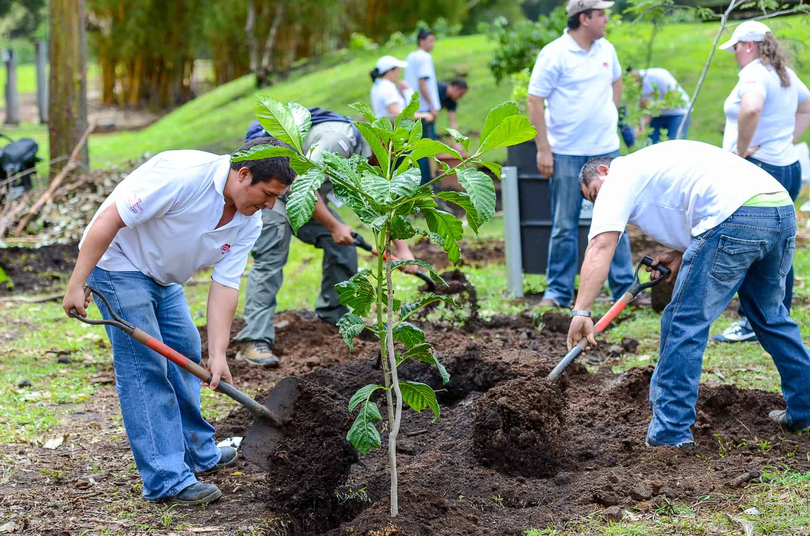
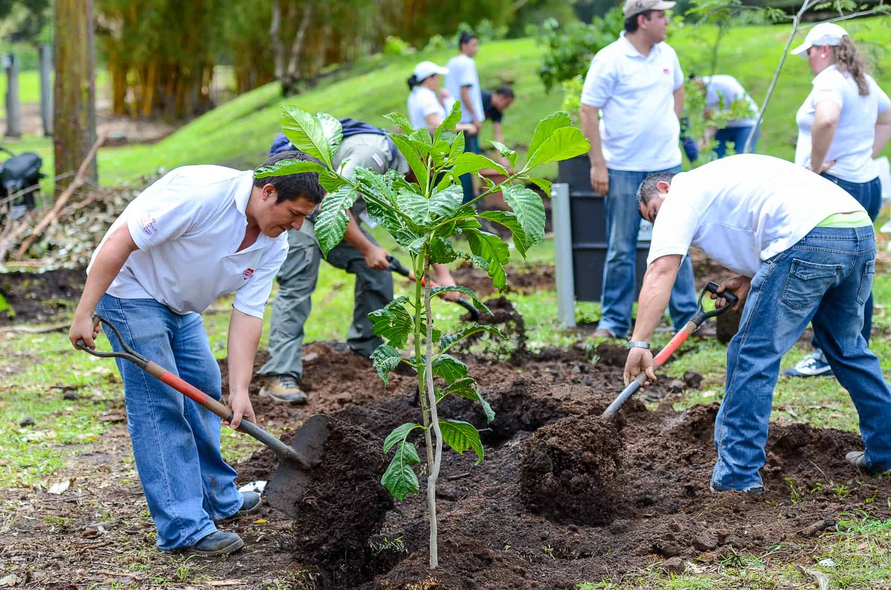

Reduce What You Can, Offset What You Can’t
Carbon Footprint Predictor has taken an initiative of fighting against climate change, it helps people to calculate their respective carbon emission throughout the day making it easy for individuals,business or organization to offset their climate impact and hasten the transition to a clean energy future.
Carbon Footprint Predictor achieves its goals through:
We encourage everyone to continually strive to reduce their carbon footprint through sensible energy reductions combined with cost-effective carbon offsets to eliminate their overall carbon footprint. We also support other interested people who are eager to help the environment by assigning them some projects where they could volunteer.With this action,they protect both environment and their own businesses; better sustainability credentials allow them to maximise commercial opportunities (from both sales tender and operational savings), enhance their brands, engage stakeholders and make theirs better businesses to work at.
 

"Alone we can do so little, together we can do so much."
--Helen Keller